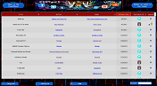

Selected Past Projects
The ChipWINdex is a custom database interface built for the Chiptunes=WIN project. It is meant to give people in the Chiptunes=WIN community the ability to browse and search a database of Chiptune Albums based on artist, label, release data, tags.

The project is ongoing, as I help add more features and try to make it run at the speed of the internet. I am also part of the team that curates the database, to ensure that it is kept at its highest quality.
This EKG onset decision interface is the final product of years of working with multiple scientists on projects related to
The project is ongoing, as I help add more features and try to make it run at the speed of the internet. I am also part of the team that curates the database, to ensure that it is kept at its highest quality.
The ChipWINdex is a custom database interface built for the Chiptunes=WIN project. It is meant to give people in the Chiptunes=WIN community the ability to browse and search a database of Chiptune Albums based on artist, label, release data, tags.
The project is ongoing, as I help add more features and try to make it run at the speed of the internet. I am also part of the team that curates the database, to ensure that it is kept at its highest quality.